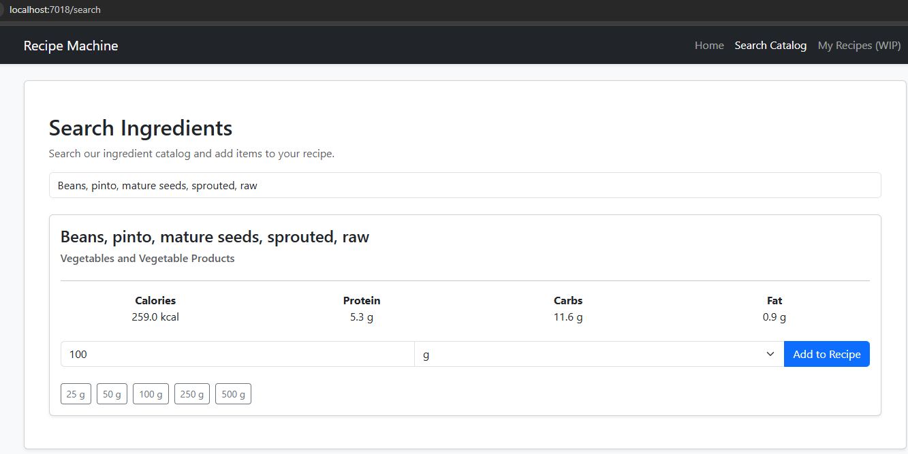
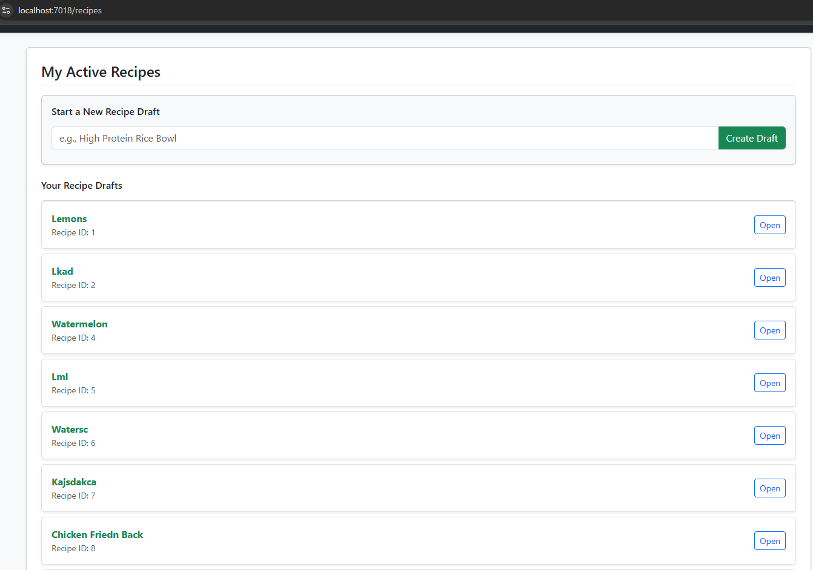
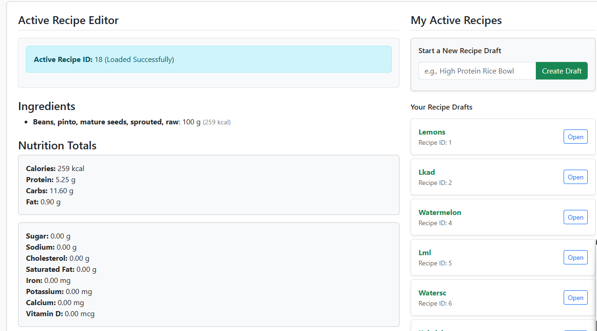

Calculator App


For this project I pretty much just wanted to get something on the projects page. I have minor experience in the past using React, and I wanted to write something in it to refamiliarize myself. I used the most basic CSS I could because I was focused on functionality and the various features. I need to take more pictures, or potentially record a video showing everything being operational. There are defintite improvements I could make, but I am more interested in starting other projects using C# and maybe more vanilla JavaScript to familiarize myself with the wide ecosystem that I heard about when I first decided I wanted to try JavaScript.
Recipe Machine
I created this app as a personal project with the intent of learning more in C# and .NET 10 to go along with what I've learned from my coursework at Lemoore college. This project turned in to a lot larger of an endeavor than I had anticipated. It is still a work in progress, but I want something to put on here to at least visualize some of the work that I have been doing on and off for about a month now. To put it simply: this is a web API in C# using EF Core, and a vanilla JavaScript front end that works as a single page application. I coded probably 80% of this by myself, but eventually I was running in to a lot of errors and had to ask Google Gemini to go over a lot of my files, as well as to help me separate some of the concerns as far as controllers and serivices in both C# and JavaScript.
FEATURES
Search Ingredients

Javascript calls my web API to return nutrient data standardized to 100/g.

Create your own recipes and name them.

Calculate all nutritonal data from ingredients in the recipe. This is still a work in progress, I will likely need to find new data to get from my database so that the names dont say things like "beans, pinto, dry" etc.
This page still needs a lot of work. As of now, I am only able to add 1 ingredient per recipe, so I would want to have an ingredient search functionality within the recipe. I also want to change the Search page so that I can choose with recipe to add the ingredient to. Currently, it makes you create a new recipe that you will add that ingredient to.
As far as my ambitions for this project, I think it would be neat to be able to offer this to people as a free service, but I would also be interested in creating an app similar to MyFitnessPal and potentially undercutting their service. If I were to do that, I would want to get the app functional and then get some data from myself, maybe import some recipes from cookbooks, and more. Ideally, I would add functionality to share recipes. I would also want to have a dashboard for paid tier people (should I decide to sell the product as a service) and inside that dashboard it can trach what meals you've eaten, what calories you had in june, or anything like that. Again, I could see a lot of ways that this could work in terms of monetization like having a tier for people who are personal trainers or nutrionists and they can keep track of their clients information or whatever it may be. For now, I just want to get things working, make sure my database has the final schema I want, and make sure that it is also populated correctly. After that, I would want to maybe work on some sort of mobile app, or potentially just get the CSS to work good on a phone.
Thoughts
My final thoughts are this. Today is August 2nd, and I have put a significant amount of work towards my Recipe Machine program, but there is still a long way to go. Currently, I want to work on something that is a bit more simple. I have been wanting to play with different Javascript libraries for drawing things on the canvas, or maybe even create a simple game. I intend to fix issues I have currently on Recipe Machine, as well as work on the CSS of everything, but I do not want that to be my primary focus right now. This recent project helped me understand a lot more of the intricacies of what JavaScript is capable of, and I want to learn a bit more of that. I also want to look in to using C# with Unity and maybe see what type of things I can do there, specifically when it comes to simulating physics. One thing that interests me is things like visualizing temperature drops from something like dropping an ice cube in water, or maybe watching how smoke spreads across a room or something. I can already tell that my ambitions are a bit too large for my current skill set, but I am excited to get started. Even if it's only baby steps, progress is progress.